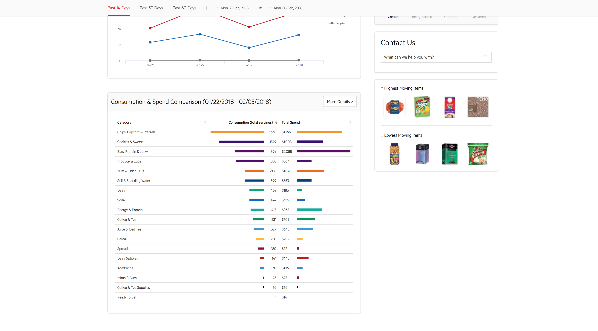
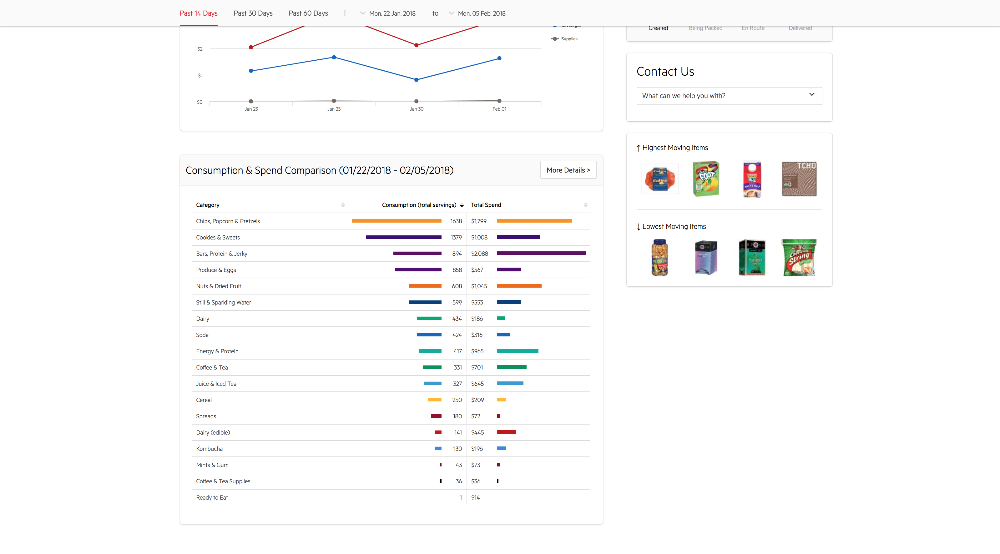

ZeroCater
Creating Transparency and Engagement With a Dashboard
Product Design, Development, User Feedback/Research
On Leap Day in 2016 I joined the team at ZeroCater, a leading provider of office catering and snacks, serving companies including Salesforce, Adobe, Apple, and Facebook. ZeroCater's success is facilitated by a suite of technologies, created in-house by our engineering team and our small design team, consisting of myself and our Art Director.
Late in 2017 I helped launch ZeroCater's Snacks & Kitchens product, a program that provides curated snacks and kitchen equipment to offices and their hungry employees. In addition to the existing Office Catering product offered by ZeroCater, Snacks & Kitchens completes ZeroCater's vision of 'owning every callorie' in the office.
The Dashboard
Subscription insights help ensure ZeroCater's clients get the most out of their Snacks & Kitchens subscription. Gathering these insights also provides essential information that guides continuous improvements to the variety and frequency of snacks delivered and the quality of service received. Through testing and crunching analytics I helped my team create a user-friendly dashboard that bridges the gap between internal operations and our end-users -- hungry office employees.
 

Consumption and Spending Data
Easily see which items your team is eating (and not eating) to inform rotation and future replenishments. Beautiful, exportable reports highlight office spending trends and track changes over time. View a matrix of information that compares which snacks are the most or least consumed in your office, and offers insights into which snacks offer the most value as well as the most satisfaction.
Upcoming Replenishments & Delivery Tracking
Clients can view what will be inside of their upcoming replenishments, and they can make adjustments if necessary. With the delivery tracking feature, clients can view a live reflection of their order from the warehouse to their shelves.
Kitchen Plan
Clients can also view their Kitchen Plan, an organized menu that reflects what the ZC warehouse is committed to delivering to clients. This view also conveniently shows which snacks are flagged as 'must have' items, and which will be on a consistant rotation. If a snack is on rotation, the next scheduled replacement snack is visable in this part of the dashboard as well.
Take a Tour
Because this is a live product, I am hiding this preview behind a password. If you are interested in learning more about how I contributed to this project, please contact me.